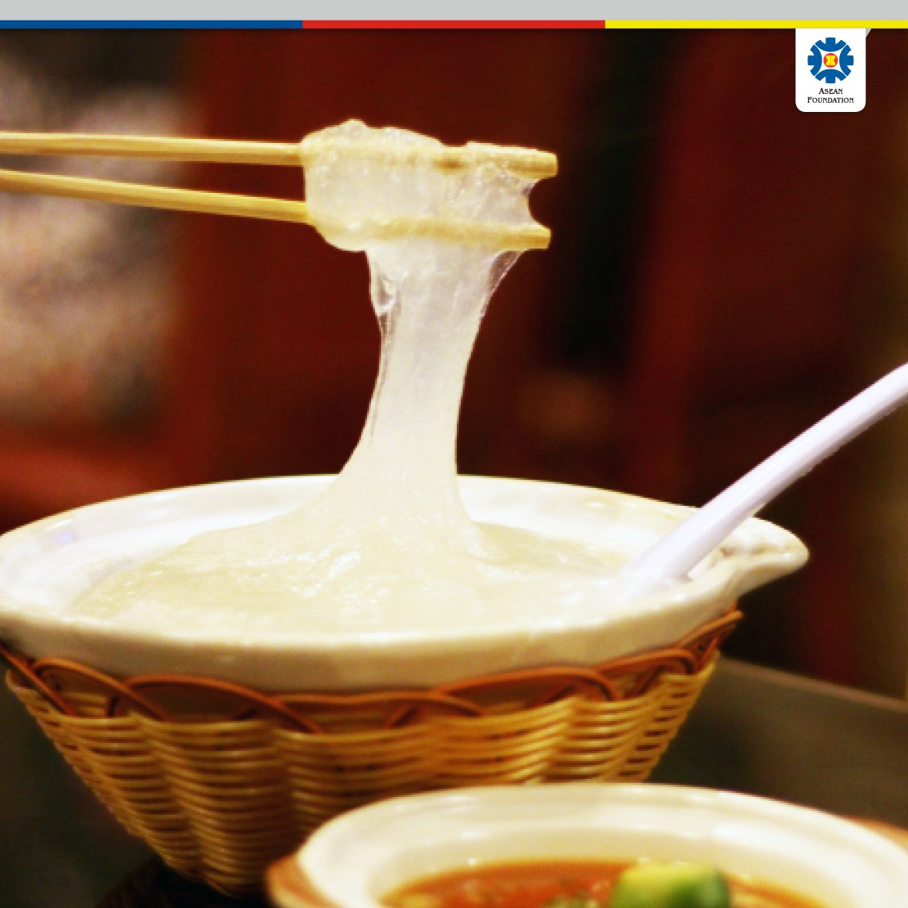

COLLEGE OF COMPUTING, INFORMATICS AND MATHEMATICS UNIVERSITI TEKNOLOGI MARA (UITM)
PUNCAK PERDANA CAMPUS, SHAH ALAM
BACHELOR OF INFORMATION SCIENCE (HONS) LIBRARY MANAGEMENT
IMS456: BASIC WEB DESIGN AND CONTENT MANAGEMENT
GROUP ASSIGNMENT:
Culture of 'Brunei' race in Kampung Padang, Bongawan Sabah
| NAME |
MATRIC NO. |
| NUR MAY UZMA BINTI MOHD SOLEHUDDIN |
2022899368 |
| SITTI NURFHEZZA BINTI INDRA BANGSAWAN |
2022822288 |
| DG LIN HAMIZAH BINTI ISHAK |
2022835432 |
| MITCHELL AMRAN |
2022887526 |
PREPARED FOR:
MADAM MARLIA BINTI IDRUS
SUBMISSION DATE:
WEEK 14
History of Brunei Ethnic in Kg Padang Bongawan, Sabah

Bongawan is a historical town located in the Papar district, West Coast, Sabah, Malaysia.It is situated approximately 70 kilometers south of Sabah's capital, Kota Kinabalu.The name Bongawan is derived from the local dialect referring to herons often seen in the paddy fields.Bongawan town is one of the few towns that can still be seen today.The construction of these wooden shop buildings was carried out during different periods and was built during the BNBC (British North Borneo Chartered Company) occupation in North Borneo.

Historically, Kampung Padang Bongawan was establish on 1993. The name 'Kampung Padang' is derived from the Malay word 'padang,' which means 'field.' This name was chosen because the village is characterized by expansive open fields. These fields are a notable feature of the landscape and play an important role in the community's daily life. Additionally, the fields are located near the local school, providing a scenic and open environment for the students and community activities

The history of the Brunei ethnic community's development in Kampung Padang Bongawan, Sabah, Malaysia, is deeply intertwined with the broader history of Brunei's influence in Sabah. The presence of the Brunei community in Sabah can be traced back to the period of the Brunei Sultanate, which had significant control over parts of Borneo before the arrival of British colonial powers in the late 19th century

Kampung Padang Bongawan, along with other areas in the west coast of Sabah such as Teluk Kimanis, Membakut, Benoni, and Papar, saw early settlements of the Brunei community. These settlements were strategic for trade and cultural exchange, contributing to the spread of Brunei Malay culture and traditions in the region
The Brunei community in Sabah has maintained distinct cultural practices, including traditional ceremonies, dialects, and culinary heritage. Over time, these practices have blended with local customs, yet they retain unique elements that reflect their historical roots
Traditional Food
KUIH CINCIN
Kuih Cincin is a traditional biscuit popular among the Brunei-Malay and Bajau communities in Sabah. It is made from a mixture of wheat flour, rice flour, brown sugar, white sugar, and cooking oil. The kuih is fried twice to produce a texture that is crunchy on the outside and chewy on the inside.
There are two variations of Kuih Cincin: the hard version (Iranun style) and the soft version (Brunei-Malay style). The soft version is also crunchy but has a softer texture and is usually sweeter. The dark brown Kuih Cincin contains more brown sugar. This kuih is known for its sweet aroma with a hint of coconut and is often served during celebrations and family events. Despite its name meaning "ring cake," this kuih is more akin to a biscuit than a cake. Its shape resembles a round floral design, giving it a unique and attractive appearance.
KUIH LIDAH
Lidah Cookies, also known as Tiram Cookies, are traditional cookies originating from Papar, Sabah, and are becoming increasingly popular among the Bruneian community. They are named as such because their shape resembles a tongue. Many locals also call them tiram cookies because their shape and texture are similar to oysters.
These cookies are made from wheat flour, eggs, and margarine that are kneaded and then fried until crispy. After frying, the cookies are usually coated with icing sugar or powdered milk, giving them a sweet taste and creamy texture. The thin fried layer of the cookies creates a crunch and buttery flavor that is delightful in the mouth. Lidah Cookies are often enjoyed with tea or coffee, making them an ideal snack for afternoon tea.
AMBUYAT

Ambuyat is an iconic traditional dish in Brunei, made from sago flour mixed with hot water to form a chewy gel. It is eaten by rolling it using a chandas, a type of bamboo fork, and dipping it into various types of sauces, such as cacah, which is made from tempoyak (fermented durian) or a mixture of sour fruits, chili, and shrimp paste. Uniquely, ambuyat is not chewed but swallowed directly, offering a unique and different dining experience.
This dish was first introduced during World War II when Brunei was under Japanese occupation. At that time, food supplies were very limited because the Japanese soldiers received supplies first, forcing the locals to find alternatives from their surroundings. They discovered sago as a food source that could replace their daily nutritional needs.
KELUPIS
Kelupis is a dish made from glutinous rice cooked with coconut milk, wrapped in nyirik leaves, and steamed. It is often served with rendang, serunding, or peanut sauce. This dish is typically served during special occasions such as weddings and traditional celebrations. Kelupis is renowned for its rich flavor, soft texture, and the unique aroma of its wrapping leaves.
Sources
- (Dg Lin Hamizah, personal communication, June 22, 2024)
PAIS
Pais is a traditional dish popular in Sabah, especially in the Papar district. This dish uses ingredients such as lemongrass, turmeric, garlic, and galangal. Basung fish is a commonly chosen fish for this dish. To prepare PAIS, the fish and these ingredients are wrapped in banana leaves before being grilled or boiled. The fish used is usually fresh, imparting a slightly sweet and spicy flavor to the dish.
Sources
- (Dg Lin Hamizah, personal communication, June 22, 2024)
LAMBAN
Lamban is a dish similar to kelupis, but it is wrapped in nyirik or pandan leaves and cooked in the same way with Kelupis. This dish uses glutinous rice and coconut milk, and is often served with meat such as rendang, serunding, or peanut sauce. Lamban is also an important traditional dish in Brunei and is often served during festive events.
Sources
- (Dg Lin Hamizah, personal communication, June 22, 2024)
KUIH PIAH
Kuih piah is made from potatoes, with potatoes and chicken as the main ingredients. This mixture is cooked together with curry until dry and used as the filling for this pastry.
Sources
- (Dg Lin Hamizah, personal communication, June 22, 2024)